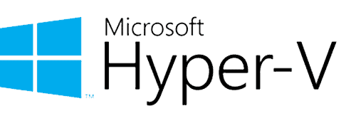

Enterprise Hyper-V Virtualization

| Project Category | Virtualization Infrastructure |
|---|---|
| Platform | Microsoft Hyper-V |
| Core Technologies | Virtual Switches, Checkpoints, VM Export and Import |
| Project Focus | Virtual machine deployment, networking, and recovery |
1. Project Overview
Built a Hyper-V lab with dedicated storage, internal and external virtual networking, Windows and Linux virtual machines, production checkpoints, export/import recovery, disk expansion, and independent cloning.
2. Environment and Technologies
| Component | Configuration |
|---|---|
| Hypervisor | Microsoft Hyper-V |
| Host operating system | Windows 10 Pro |
| Server guest | Windows Server 2022 |
| Client guest | Windows 10 |
| Linux guest | Ubuntu Linux |
| Virtual disk format | VHDX |
| Partition style | GPT |
| File system | NTFS |
| Networking | External and Internal virtual switches |
| Recovery features | Production Checkpoints, Export, and Import |
3. Solution Architecture
- Windows 10 Pro Hyper-V Host
- External Virtual Switch
- Physical Network and Internet Access
- YCS-Enterprise-Network — Internal Switch
- YCS-DC01 — Windows Server 2022
- Windows 10 Client
- Ubuntu Linux
- VHDX Repository
- Export Repository
- External Virtual Switch
The internal switch isolates lab communication between the host and virtual machines, while the external switch provides physical network and internet connectivity when required.
4. Implementation Highlights
Phase 1 - Hyper-V Environment Preparation
The Hyper-V host was prepared before any virtual machines were created. Dedicated storage paths improved organization and simplified later export and recovery operations.
Verified the initial Hyper-V Manager state.
Configured default locations for VM configuration files and VHDX disks.
Created an External Virtual Switch.
Created the YCS-Enterprise-Network Internal Virtual Switch.

Initial Hyper-V Manager before deploying the virtual infrastructure.

Dedicated storage locations configured for virtual machines and virtual hard disks.

YCS-Enterprise-Network internal virtual switch created for the lab environment.
Phase 2 - Virtual Machine Deployment and Configuration
The primary Windows Server virtual machine was created using a consistent naming convention and modern Generation 2 virtual hardware.
Created YCS-DC01 with a dedicated storage location.
Selected Generation 2 with UEFI and Secure Boot support.
Enabled Dynamic Memory and assigned virtual processors.
Connected the VM to YCS-Enterprise-Network.
Created a 60 GB dynamically expanding VHDX disk.
Attached Windows Server 2022 installation media.

Creating the primary Windows Server virtual machine.

Generation 2 selected to support UEFI and Secure Boot.

Primary dynamically expanding VHDX disk configured with a 60 GB capacity.
Phase 3 - Security and Recovery Configuration
Before production use, the virtual machine settings were reviewed to improve startup behavior, security, and recoverability.
Enabled Secure Boot for the Generation 2 VM.
Selected Production Checkpoints for application-consistent recovery points.
Configured automatic start after the Hyper-V host starts.
Configured graceful guest shutdown when the host stops.

Production Checkpoints selected as the preferred checkpoint type.

Secure Boot configuration reviewed for the Windows Server virtual machine.
Production Checkpoints were used as short-term recovery points before configuration changes. They were not treated as a replacement for a dedicated backup solution.
Phase 4 - Multi-Operating-System Deployment
The environment was validated by deploying multiple guest operating systems and confirming that each workload started successfully.
Deployed and booted Windows Server 2022.
Validated the Windows 10 client VM.
Deployed Ubuntu to demonstrate Linux guest support.
Reviewed the final VM inventory in Hyper-V Manager.

Windows Server 2022 successfully deployed inside Hyper-V.

Windows 10 client virtual machine running successfully.

Ubuntu virtual machine running successfully on Hyper-V.

Final virtual machine inventory after deployment.
Phase 5 - Virtual Machine Export and Recovery
Hyper-V Export was used to create portable copies of the virtual machines for lab recovery, migration, and restoration testing.
Exported the selected VM to a dedicated repository.
Removed the existing VM registration to simulate a recovery scenario.
Imported the exported VM configuration.
Powered on the recovered VM to validate operating system integrity.

Virtual machine export completed successfully.

Imported virtual machine successfully restored and registered in Hyper-V Manager.

Recovered virtual machine booted successfully after import.
Phase 6 - Virtual Storage Expansion
A second virtual hard disk was added to the Windows client to separate operating system files from data and demonstrate guest storage administration.
Created a dynamically expanding secondary VHDX disk.
Attached the disk through the virtual SCSI controller.
Initialized the new disk using GPT.
Created and formatted an NTFS volume.
Assigned the drive letter F: for enterprise data.

Creating the additional VHDX data disk.

Additional virtual hard disk attached through the SCSI controller.

Enterprise data volume created and assigned the drive letter F:.
Phase 7 - Independent Virtual Machine Cloning
The exported VM was imported using the Copy the virtual machine option to create an independent clone with a new Hyper-V identifier.
Selected Copy the virtual machine (Create a new unique ID).
Reviewed destination paths for configuration, checkpoint, and VHDX files.
Completed the import without replacing the original VM.
Confirmed that the cloned VM was registered independently.

Selecting Copy the virtual machine to generate a new unique Hyper-V ID.

Cloned virtual machine successfully deployed in Hyper-V Manager.
5. Validation Results
| Validation Item | Result |
|---|---|
| Hyper-V environment preparation | Completed |
| Virtual switch configuration | Verified |
| Windows Server 2022 deployment | Operational |
| Windows 10 deployment | Operational |
| Ubuntu deployment | Operational |
| Production Checkpoints | Validated |
| VM export and import | Validated |
| Recovered VM boot test | Successful |
| Secondary VHDX data disk | Configured |
| Independent VM clone | Created |
6. Operational Considerations and Troubleshooting
Validated boot order and ISO attachment when preparing the Windows Server installation.
Confirmed virtual switch assignments to avoid disconnected guest network adapters.
Used Production Checkpoints before major configuration changes to provide a rollback point.
Validated imported VM registration and guest boot after recovery.
Used the new unique ID option during cloning to prevent Hyper-V identity conflicts.
Initialized the added VHDX disk inside the guest operating system before creating the F: volume.